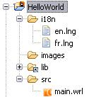

Warning:
For Tiny Mobile Widgets project, don't use main.wrl file name. main.wrl file name is reserved.
Code conventions are important to produce a homogeneous source code.
The code conventions chapter
present the MeMo application coding standards.
Mobile Widgets offers a mechanism for internationalized your applications.
See internationalization chapter.
Scalability management depends of Mobile Widgets version.
See Scalability guidelines for Mobile Widget
if you create a widget for Mobile Widgets.
See Scalability guidelines for Tiny Mobile Widgets
if you create a widget for the Tiny version of Mobile Widgets.
Mobile Widgets provide a prototype to notify application when screen size change.
See SizeNotifier prototype for more informations.
Like a HTML site, MeMo use CSS to define application style.
You can define the style for your application.
Style is supported by Mobile Widgets prototypes (see Prototypes part).
See CSS chapter for more information about CSS in MeMo.
To reuse code, you can create prototypes.
Prototypes allow the set of VRML node types to be extended by the user.
Prototype definitions can be included in the file in which they are used or defined externally.
Prototypes may be defined in terms of other VRML nodes.
Mobile Widgets offers many reusable components via a VRML prototypes library.
See prototypes chapter.
* 256 nodes by scene * XX Fields in Script node (??)